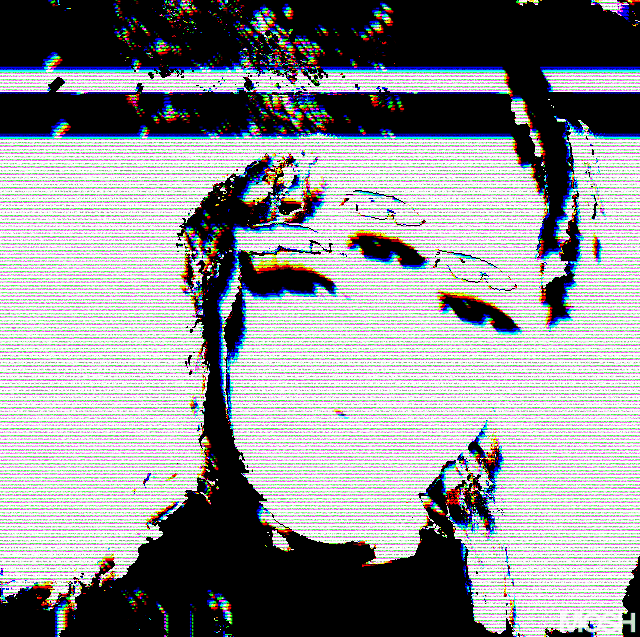
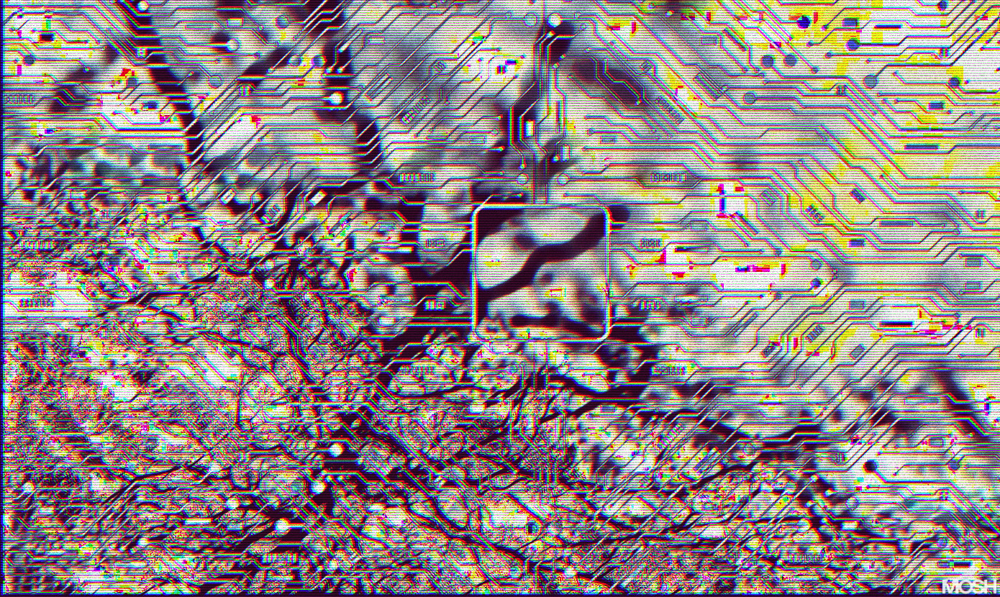

comparto con la poeta maldita proceso soledad
herida abierta que insisten en disciplinar
evitar descender al abismo
lo pago en la farmacia
he amansado el fuego que a ellas consumió en silencio
con dosis precisa continua
no hay olvido en mi palabra
solo intervención tecnológica
compasión de sustancia actualizada
su tragedia me conmueve
mi supervivencia las honra
mi poesía no brota de sufrimiento extinto
es simple ventaja técnica de estar viva hoy
escribiendo desde la grieta de mi propio siglo


el grimorio responde a quien lo toca
Frío
metal
el
micelio
devora
toda
la
red
Soy la bruja que danza en los claros del bosque
que susurra a la luna
que aúlla con los lobos.
Blasfemia hecha carne
naturaleza indomable
que ninguna sombra contiene.
Mi cabello un río salvaje
micelio
que se extiende hacia la tierra y el cosmos
Me quisieron frágil, vaporosa.
Soy
incendio
roza los versos para construir un conjuro único
Cuando mi palabra provoque una breve chispa
cercana a la que fue encendida en los seres tocados por la Lupe,
Dueña de sí*
cuando en las bocas de quienes hayan visto
cómo el amanecer fogariza
el íntimo pensar,
ese día me consagraré bruja ardorosa.
De mi cuerpo descompuesto crecerán las flores,
y yo estaré en ellas.
Conjuro esa sea mi eternidad
Me fortalezco con plantas
Me construyo bosque.
Imploro que me encuentres selva
no siendo morgue.
Reniego de ser cementerio de almas lamentantes.
Anhelo recibirte como la luz del sol
reluciendo sobre las flores
anochecer contigo sobre el césped
cubiertas por la luna
Rezo para que nos compartamos desde la raíz
sin miedo a ser hierba fluctuante
sabiendo que la otra es árbol que cobija
Ruego que llegue el día
en que el único dolor
sea el trozar de la hierba
bajo nuestro avance.
Y así, como el camino de estrellas me ha guiado en el sendero,
cuando llegue el momento
¡oh, ancestras!
Les pido que envíen al dragón
para que, montada en él,
me una con ustedes en el firmamento.
¡Salve, gran fuerza divina!
Guía a tu hija en su retorno a tu manto,
para que las tres que fui
la guerrera
la creadora
la sabia
descansen eternas en tu regazo.